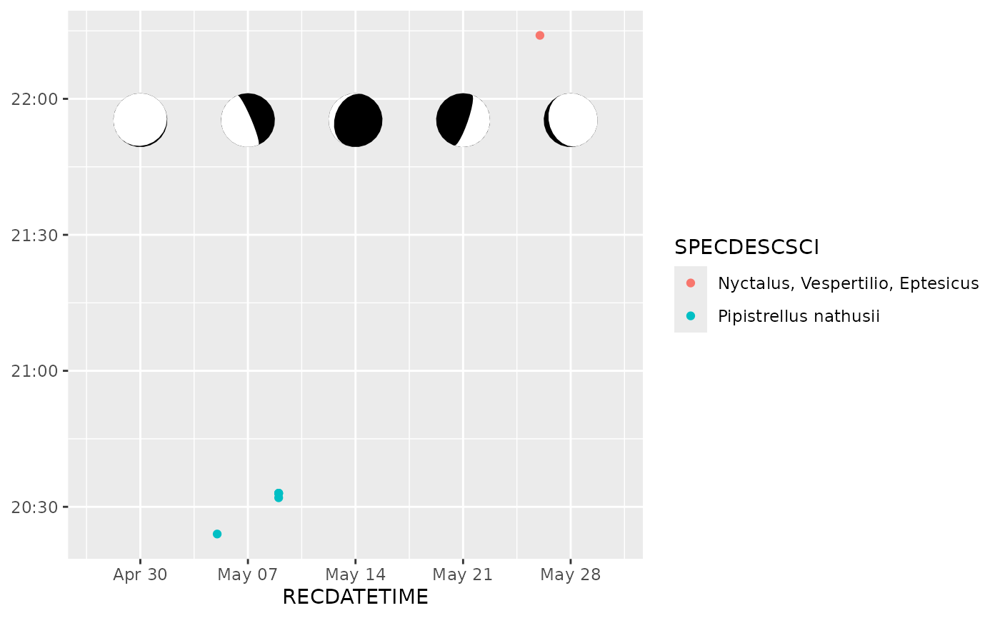
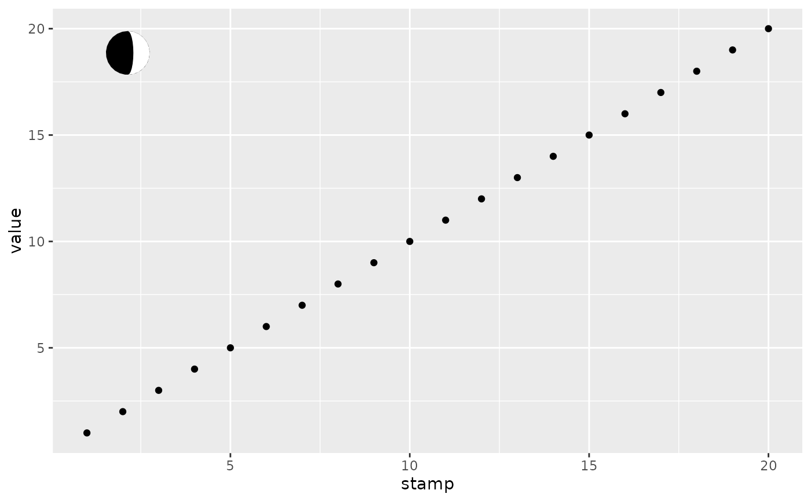

This function uses the suncalc package to calculate the lunar phase
and uses it to annotate your plot. If your plot has an axis with a
continuous datetime scale, lunar phases are plot along this axis.
Otherwise you have to specify the date of the lunar phase.
Format
An object of class AnnotateLunarphase (inherits from GeomPolygon, Geom, ggproto, gg) of length 6.
Arguments
- date
A datetime object used to calculate the illuminated fraction of the moon
- longitude, latitude
Used to calculate zenith angle. This will result in a more accurate shape of the moon as observed at the specified location.
- breaks
One of:
NULLfor no breakswaiver()for the breaks specified bydate_breaksA
Date/POSIXctvector giving positions of breaksA function that takes the limits as input and returns breaks as output
- placement
Relative placement of the lunar annotation in the plotting panel. It should be between 0 and 1. Default is 0.9.
- radius
Size of the lunar pictogram. It is best to use an absolute unit from the
gridpackage. Default is a radius of 5 mm (grid::unit(5, "mm"))- n
Number of coordinates in the returned polygon shape (should be even).
- ...
Passed to the list of layer parameters.
Value
Returns a ggplot2::layer() which can be added to a ggplot2::ggplot()
Examples
library(ggplot2)
library(dplyr)
#>
#> Attaching package: ‘dplyr’
#> The following objects are masked from ‘package:stats’:
#>
#> filter, lag
#> The following objects are masked from ‘package:base’:
#>
#> intersect, setdiff, setequal, union
library(lubridate)
#>
#> Attaching package: ‘lubridate’
#> The following objects are masked from ‘package:base’:
#>
#> date, intersect, setdiff, union
data(bats)
monitoring <- attr(bats, "monitoring")
## A lunar annotation can be added to a geom_hourglass layer
ggplot(mutate(bats, YEAR = year(RECDATETIME), MONTH = month(RECDATETIME)) |>
filter(YEAR == 2018, MONTH == 5),
aes(x = RECDATETIME, col = SPECDESCSCI)) +
geom_hourglass() +
annotate_lunarphase(
longitude = monitoring$longitude[[1]],
latitude = monitoring$latitude[[1]],
placement = 0.8) +
scale_x_datetime(limits = as_datetime(c("2018-04-27", "2018-05-31")))

## In fact, it can be added to any plot with a continuous datetime scale
ggplot(data.frame(stamp = seq(as_datetime("2025-04-01 UTC"),
as_datetime("2025-04-30 UTC"),
length.out = 20),
value = 1:20), aes(x = stamp, y = value)) +
geom_point() +
annotate_lunarphase()
## Moreover, you can add it to an arbitrary plot without such scales,
## but then you need to specify the date
ggplot(data.frame(stamp = 1:20,
value = 1:20), aes(x = stamp, y = value)) +
geom_point() +
annotate_lunarphase(date = "2020-01-01", placement = c(0.1, 0.9))
